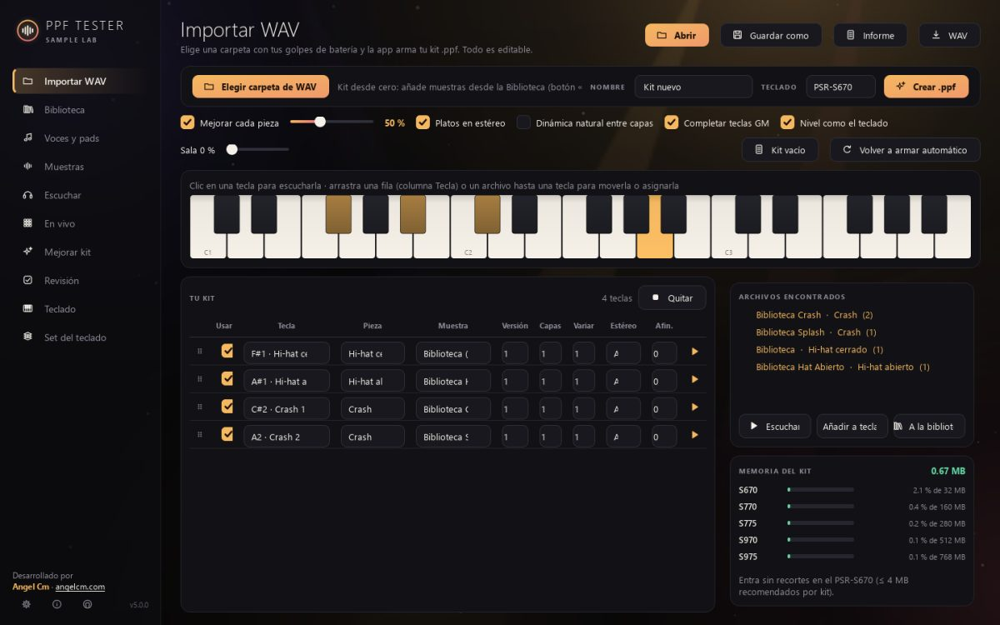
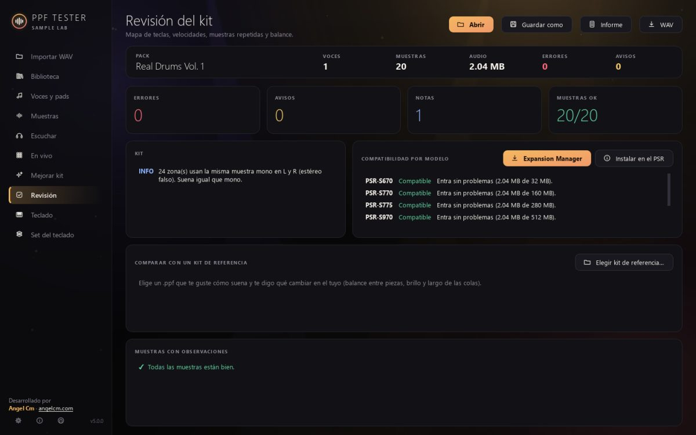
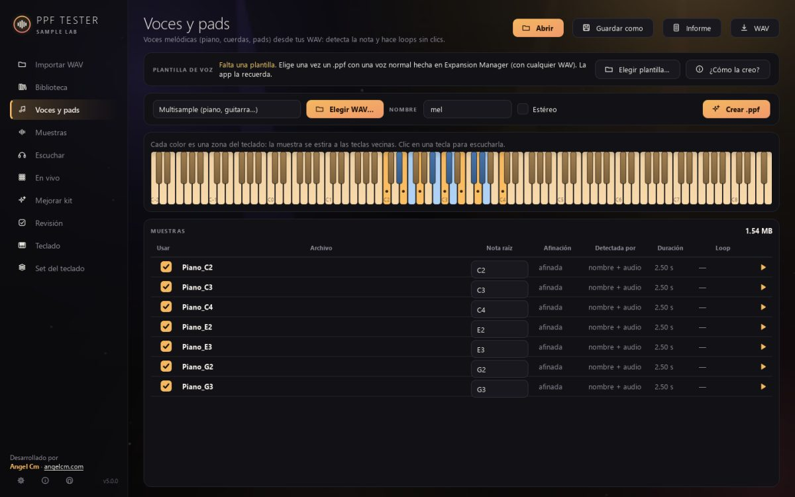
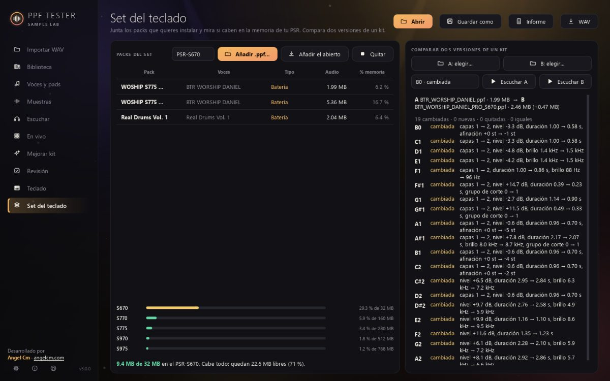

Guías paso a paso
¿Qué quieres hacer hoy?
Elige una tarea. Cada guía dice exactamente qué botón pulsar.
- Abre «Importar WAV» y pulsa Elegir carpeta de WAV (o arrastra la carpeta a la ventana). Sirve cualquier pack: la app lee las carpetas y nombres como Kick, Snare, Toms, Hi Hat…
- Revisa la tabla «Tu kit». Cada fila es una tecla. Para mover una pieza, arrastra la fila hasta otra tecla del piano; si estaba ocupada, se intercambian.
- Elige tu teclado arriba a la derecha (por ejemplo PSR-S670). La tarjeta «Memoria del kit» te dice si entra.
- Ajusta el sonido si quieres: «Mejorar cada pieza», «Sala» para un sonido más grande, y «Ambiente» si tu kit trae micrófonos de sala u overheads.
- Pulsa Crear .ppf. El kit se abre solo para que lo escuches en «Escuchar» o «En vivo».

- Abre tu .ppf con Abrir o Ctrl+O.
- Ve a «Revisión». Verás errores, avisos y la compatibilidad con cada modelo: es la lista de lo que conviene arreglar.
- En «Mejorar kit» elige tu teclado y una plantilla (por ejemplo Worship suave) y pulsa Mejorar (vista previa). Nada se guarda todavía.
- Compara con Antes y Después. Si una pieza no te convence, usa el ajuste fino (golpe, cuerpo, brillo).
- Guarda con Guardar .ppf mejorado: tu original nunca se sobrescribe. En «Set del teclado» puedes comparar las dos versiones tecla por tecla.

- Conecta el PSR al ordenador con un cable USB en el puerto USB TO HOST. Para grabar lo que suena, lleva la salida PHONES a tu interfaz de audio.
- Instala el pack en el teclado (guía «Instalar en el teclado») y elige la voz en RIGHT 1.
- En «Teclado», pulsa Asistente paso a paso. Te pide elegir la salida MIDI del PSR y la entrada de audio.
- Prueba MIDI y audio: el asistente toca un bombo y una caja; tú confirmas si sonó y la barra muestra si llega señal.
- Prueba completa: toca cada tecla a 3 fuerzas, avisa de notas mudas o con retraso y, si quieres, calibra la simulación para que suene como tu PSR. Al final guarda un informe.

- Una sola vez: en Expansion Manager crea una voz normal (no de batería) con cualquier WAV y guárdala como .ppf. En «Voces y pads» pulsa Elegir plantilla… y elígela.
- Elige el modo: Multisample (piano, guitarra), Sostenido con loop (cuerdas, órgano) o Pad / ambiente (un solo WAV).
- Pulsa Elegir WAV… La app detecta la nota de cada archivo por su nombre (Piano_C3.wav) o por el sonido, y colorea en el piano la zona que cubre cada muestra.
- Corrige la nota raíz si hace falta y escucha cada zona tocando el piano.
- Pulsa Crear .ppf y ábrelo en Expansion Manager antes de instalarlo.

- En PPF Tester, «Revisión» → Expansion Manager. Abre el programa de Yamaha y copia la ruta de tu .ppf.
- En Expansion Manager, importa el .ppf (Import Pack) y escúchalo.
- Añade tu teclado con su archivo Instrument Info (se guarda desde el PSR a una memoria USB).
- Exporta el «Pack Installation File» para tu modelo y cópialo a una memoria USB.
- En el PSR: Menu → Expansion → Pack Installation, y elige el archivo.
Antes de instalar: instalar un archivo reemplaza toda la memoria de expansión. Usa «Set del teclado» para juntar en un solo paquete todo lo que quieres tener y comprobar que cabe.
